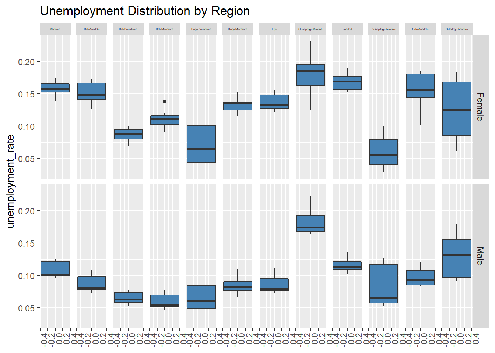
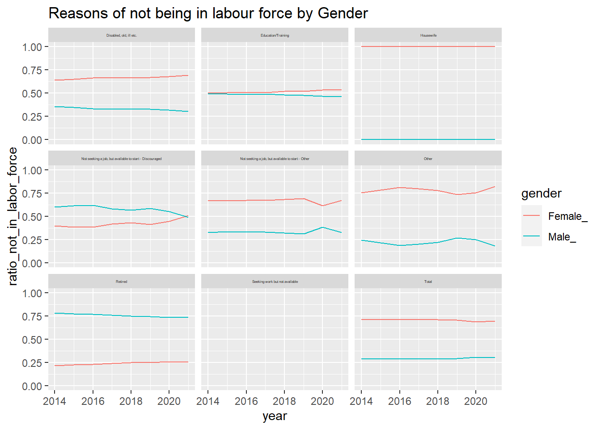
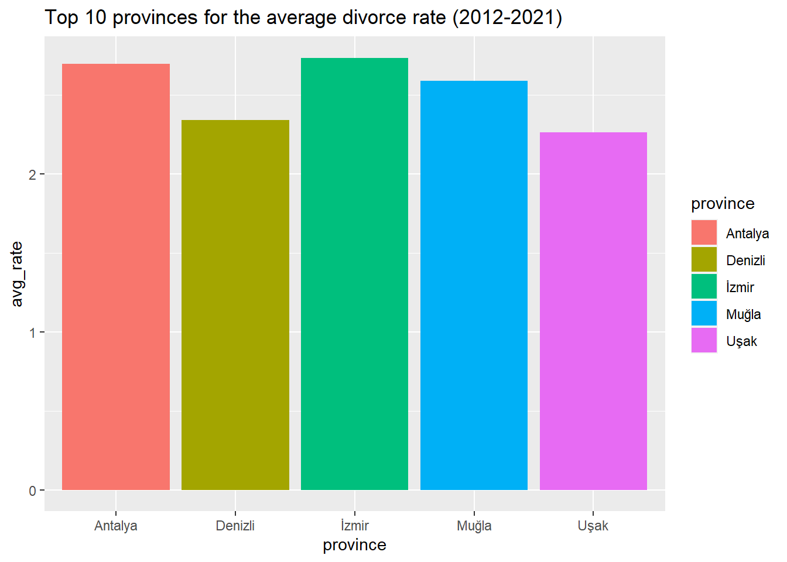

pti <- c("readxl","dplyr","tidyverse", "ggplot2", "lubridate", "tidyr", "stringi", "hrbrthemes", "viridis", "scales", "knitr")
pti <- pti[!(pti %in% installed.packages())]
if(length(pti)>0){
install.packages(pti)
}
library(readxl)
library(dplyr)
library(tidyverse)
library(ggplot2)
library(lubridate)
library(tidyr)
library(stringi)
library(hrbrthemes)
library(viridis)
library(scales)
library(knitr)3 TUIK EDA
Exploratory Data Analysis (EDA)
Data Dictionary
Non-institutional population: Comprises all the population excluding the residents of dormitories of universities, orphanage, rest homes for elderly persons, special hospitals, prisons and military barracks etc.
Non-institutional working age population: Indicates the population 15 years old and over within the non-institutional civilian population.
Labour force: Labour force covers the working-age population that is willing to supply labour for the production of economic goods and services in the relevant reference period. In determining the labour force, activities that contribute to the production of goods and services within the United Nations System of National Accounts (SNA) production boundary are essential. Labour force comprises all employed and unemployed people.
Labour force participation rate: Indicates the ratio of the labour force to non-institutional working age population.
Employment: Comprises all the non-institutional working age population who are included in the persons “at work” and “not at work” described below.
· Persons at work: Persons economically active during the reference period for at least one hour as a regular employee, casual employee, employer, self employed or unpaid family worker.
· Persons not at work: Regular employee, casual employee, employer, self employed or unpaid family who have a job but away from job during the entire reference week for various reasons are considered as employed, if there is a tie with job
according to the absence reason from job.
Persons who are not at work during the reference week due to official holidays or annual leave, sick leave, working hour arrangements, job related training or legal maternity/paternity leave are employed without the need for additional criteria.
Persons who are not at work to raise a child (parental leave, unpaid leave for childcare) are considered as employed only if they have an assurance of return to work within a period of less than 3 months or less and/or they continue to receive job
related wage/salary during their absence.
Persons who are not at work because of off-season/low season are considered as employed only if they performing any task or duty during the off-season period.
Persons who are not at work due to the other reasons such as bad weather, there was no work, slowing down or stopping of work for technical or economic reasons, participating a training unrelated to job are considered as employed only if they
have an assurance of return to work within a period of 3 months or less.
The members of producer cooperatives and apprentices or trainees who are working to gain any kind of benefit (income in cash or in kind, social security, traveling cost, pocket money etc.) are considered to be employed.
Employment Rate: It is the ratio of employment to the non-institutional working age population.
Unemployment rate: It is the ratio of unemployed persons to the labour force.
Reference :
https://data.tuik.gov.tr/Search/Search?text=employment%20rate
Analysis
First of all, libraries are installed.
Data files are read in Excel.
labour_force_status_by_reg <- read_excel("docs/SummerMoon - TUIK - Issizlik Dataset.xlsx", sheet = "Labour_force_status_by_reg")mean_age_of_mother_by_statistic <- read_excel("docs/SummerMoon - TUIK - Issizlik Dataset.xlsx", sheet = "Mean_age_of_mother_by_Statistic")reasons_of_not_being_in_lab_for <- read_excel("docs/SummerMoon - TUIK - Issizlik Dataset.xlsx", sheet = "Reasons_of_not_being_in_lab_for")employed_rate_by_marital_status <- read_excel("docs/SummerMoon - TUIK - Issizlik Dataset.xlsx", sheet = "Employed_rate_by_marital_status")
female<-employed_rate_by_marital_status%>%filter(gender=="Female")
male<-employed_rate_by_marital_status%>%filter(gender=="Male")crude_divorce_rate_by_provinces <- read_excel("docs/SummerMoon - TUIK - Issizlik Dataset.xlsx", sheet = "Crude_divorce_rate_by_provinces")Descriptive statistics are given for high-level understanding of each data table.
summary(labour_force_status_by_reg) year region gender
Min. :2014 Length:208 Length:208
1st Qu.:2016 Class :character Class :character
Median :2018 Mode :character Mode :character
Mean :2018
3rd Qu.:2019
Max. :2021
labour_force_participation_rate unemployment_rate employment_rate
Min. :0.1620 Min. :0.0290 Min. :0.1420
1st Qu.:0.3280 1st Qu.:0.0800 1st Qu.:0.2800
Median :0.5375 Median :0.1095 Median :0.4500
Mean :0.5142 Mean :0.1132 Mean :0.4594
3rd Qu.:0.7060 3rd Qu.:0.1472 3rd Qu.:0.6452
Max. :0.7740 Max. :0.2310 Max. :0.6920 summary(mean_age_of_mother_by_statistic) region district province_id province
Length:1053 Length:1053 Length:1053 Length:1053
Class :character Class :character Class :character Class :character
Mode :character Mode :character Mode :character Mode :character
year mother_mean_age
Min. :2009 Min. :25.77
1st Qu.:2012 1st Qu.:27.58
Median :2015 Median :28.23
Mean :2015 Mean :28.20
3rd Qu.:2018 3rd Qu.:28.82
Max. :2021 Max. :30.52 summary(reasons_of_not_being_in_lab_for) year gender reason pop_not_in_lab_force
Min. :2014 Length:128 Length:128 Min. : 0
1st Qu.:2016 Class :character Class :character 1st Qu.: 362250
Median :2018 Mode :character Mode :character Median : 1212000
Mean :2018 Mean : 1818773
3rd Qu.:2019 3rd Qu.: 2260000
Max. :2021 Max. :11589000 summary(employed_rate_by_marital_status) year gender marital_status employed_rate
Min. :2014 Length:64 Length:64 Min. :0.0650
1st Qu.:2016 Class :character Class :character 1st Qu.:0.2525
Median :2018 Mode :character Mode :character Median :0.3525
Mean :2018 Mean :0.3897
3rd Qu.:2019 3rd Qu.:0.5593
Max. :2021 Max. :0.7279 summary(crude_divorce_rate_by_provinces) province year crude_divorce_rate
Length:810 Min. :2012 Min. :0.1129
Class :character 1st Qu.:2014 1st Qu.:0.9894
Mode :character Median :2016 Median :1.4774
Mean :2016 Mean :1.4206
3rd Qu.:2019 3rd Qu.:1.8818
Max. :2021 Max. :3.0363 After this section, data visualizations are made to have a better understanding about data.
labour_force_status_by_reg %>%
filter(region == "Total") %>%
select(year, gender, labour_force_participation_rate, employment_rate, unemployment_rate) %>%
pivot_longer(cols = -c(gender, year), values_to = "value", names_to = "variable") %>%
ggplot(aes(x = year, y = value, fill = reorder(variable, value))) +
geom_bar(position="dodge", stat="identity") +
facet_grid(. ~ gender) +
scale_x_continuous(breaks = c(min(labour_force_status_by_reg$year):max(labour_force_status_by_reg$year))) +
theme(axis.text.x = element_text(angle=90,vjust=1,hjust=1), legend.position="top", legend.title=element_blank()) +
coord_flip() +
labs(title = "Labour Force Rates by Gender")
labour_force_status_by_reg %>%
filter(region != "Total") %>%
ggplot() +
geom_line(aes(x = year, y = labour_force_participation_rate, color = gender)) +
facet_wrap( ~ region) +
scale_x_continuous(breaks = c(min(labour_force_status_by_reg$year):max(labour_force_status_by_reg$year))) +
theme(axis.text.x = element_text(angle=90,vjust=1,hjust=1)) +
labs(title = "Labour Force Participation Rate by Region")
labour_force_status_by_reg %>%
filter(region != "Total") %>%
ggplot() +
geom_line(aes(x = year, y = employment_rate, color = gender)) +
facet_wrap( ~ region) +
scale_x_continuous(breaks = c(min(labour_force_status_by_reg$year):max(labour_force_status_by_reg$year))) +
theme(axis.text.x = element_text(angle=90,vjust=1,hjust=1)) +
labs(title = "Employment Rate by Region")labour_force_status_by_reg %>%
filter(region != "Total") %>%
ggplot() +
geom_line(aes(x = year, y = unemployment_rate, color = gender)) +
facet_wrap( ~ region) +
scale_x_continuous(breaks = c(min(labour_force_status_by_reg$year):max(labour_force_status_by_reg$year))) +
theme(axis.text.x = element_text(angle=90,vjust=1,hjust=1)) +
labs(title = "Unemployment Rate by Region")
labour_force_status_by_reg %>%
filter(region != "Total") %>%
ggplot(aes(y=unemployment_rate, group = gender)) +
geom_boxplot(fill="steelblue") +
facet_grid(gender ~ region) +
theme(axis.text.x = element_text(angle=90,vjust=1,hjust=1)) +
theme(strip.text.x = element_text(size = 5)) +
labs(title = "Unemployment Distribution by Region")
reasons_of_not_being_in_lab_for %>%
#filter(gender == "Female") %>%
group_by(reason,year, gender) %>%
summarise(sum_of_not_in_lab_force = sum(pop_not_in_lab_force)) %>%
pivot_wider(values_from = sum_of_not_in_lab_force, names_from = gender) %>%
transmute(year = year,reason = reason, Female_ = Female/ (Female+Male), Male_ = 1 - Female/ (Female+Male)) %>%
pivot_longer(cols= ends_with("ale_"),values_to = "ratio_not_in_labor_force", names_to = "gender") %>%
ggplot(aes(x = year, y = ratio_not_in_labor_force, color = gender)) +
geom_line() +
facet_wrap( ~ reason) +
labs(title = "Reasons of not being in labour force by Gender")diff<-female%>%mutate(ratio=male$employed_rate/female$employed_rate) %>%select(-gender)
ggplot(diff, aes(x = year, y = ratio, color = marital_status)) + geom_line() +
scale_x_continuous(breaks = c(min(female$year):max(female$year))) +
labs(title = "Ratio of Employment to Unemployment by Gender")mean_age_of_mother_by_statistic %>%
filter(province == "İstanbul") %>%
ggplot(aes(x = year, y = mother_mean_age)) +
geom_line() +
coord_cartesian(xlim = c(2009,2021),ylim = c(25,max(mean_age_of_mother_by_statistic$mother_mean_age + 5))) +
geom_line(arrow = arrow(), aes(color = year)) +
geom_point(color = "#0099f9", size = 5) +
labs(title = "Mean Age of Mother by Year in İstanbul")
five_metropolis <- c("İstanbul","Ankara","İzmir","Bursa","Adana")
mean_age_of_mother_by_statistic %>%
filter(province %in% five_metropolis, year %in% c(2019,2020,2021)) %>%
ggplot(aes(x = year, y= mother_mean_age)) +
geom_bar(stat = "identity", position = position_dodge(), alpha = 0.75) +
facet_grid(. ~province) +
ylim(0,35) +
geom_text(aes(label = sprintf("%.2f",mother_mean_age)), fontface = "bold", vjust = 1.5, colour = "white", size = 3) +
labs(x = "\n Years", y = "Mean Mother Age\n", title = "\n Mean Mother Age by Year and Metropolis \n") +
theme(plot.title = element_text(hjust = 0.5),
axis.title.x = element_text(face="bold", colour="darkgreen", size = 12),
axis.title.y = element_text(face="bold", colour="darkgreen", size = 12),
legend.title = element_text(face="bold", size = 10),
strip.background = element_rect(fill="lightblue", colour="black", size=1),
strip.text = element_text(face="bold", size=rel(1.2))) +
labs(title = "Mean Age of Mother by Metropolis in the last 3 years")
mean_age_of_mother_by_statistic %>%
ggplot(aes(x = mother_mean_age, fill = year)) +
geom_histogram(bins = 10) +
facet_grid(year~.) +
labs(title = "Mean Age of Mother by Year")
Minimum Average Age of Mother by Region
mean_age_of_mother_by_statistic %>%
select(region,year ,mother_mean_age) %>%
group_by(region,year) %>%
summarise(min_mean_mother_age = min(mother_mean_age)) %>%
pivot_wider(values_from = min_mean_mother_age, names_from = year)# A tibble: 12 × 14
# Groups: region [12]
region `2009` `2010` `2011` `2012` `2013` `2014` `2015` `2016` `2017` `2018`
<chr> <dbl> <dbl> <dbl> <dbl> <dbl> <dbl> <dbl> <dbl> <dbl> <dbl>
1 TR1 İs… 28.0 28.3 28.4 28.7 28.9 29.1 29.2 29.4 29.6 29.7
2 TR2 Ba… 27.0 27.0 27.2 27.5 27.7 27.9 27.9 28.1 28.2 28.6
3 TR3 Eg… 25.8 26.1 26.3 26.5 26.9 27.0 27.1 27.1 27.3 27.5
4 TR4 Do… 27.1 27.6 27.8 28.0 28.0 28.5 28.3 28.5 28.8 28.9
5 TR5 Ba… 26.8 27.0 27.2 27.4 27.7 27.8 28.0 28.1 28.2 28.3
6 TR6 Ak… 26.6 26.8 27.0 27.3 27.5 27.7 27.8 27.9 28.0 28.1
7 TR7 Or… 25.8 26.1 26.2 26.7 27.0 27.1 27.2 27.5 27.4 27.6
8 TR8 Ba… 26.2 26.4 26.8 27.0 27.4 27.6 27.8 27.9 28.0 27.9
9 TR9 Do… 26.6 26.8 27.1 27.5 27.7 27.9 28.1 28.3 28.4 28.6
10 TRA Ku… 26.2 26.4 26.3 26.5 26.7 26.7 26.8 26.8 26.7 26.8
11 TRB Or… 26.6 26.7 26.7 26.7 27.0 27.0 27.0 26.9 27.0 27.1
12 TRC Gü… 27.0 26.8 26.8 27.1 27.3 27.2 27.4 27.2 27.1 27.1
# … with 3 more variables: `2019` <dbl>, `2020` <dbl>, `2021` <dbl>plot_data1<-crude_divorce_rate_by_provinces %>%
group_by(province) %>%
summarise(avg_rate = mean(crude_divorce_rate))%>%
arrange(desc(avg_rate)) %>%
top_n( 5)
ggplot(plot_data1,aes(x=province, y=avg_rate, fill= province)) +
geom_bar(stat = "identity") +
labs(title = "Top 10 provinces for the average divorce rate (2012-2021)")
plot_data2<-crude_divorce_rate_by_provinces %>%
group_by(province) %>%
summarise(avg_rate = mean(crude_divorce_rate))%>%
arrange(avg_rate) %>%
slice(1:5)
ggplot(plot_data2,aes(x=province, y=avg_rate, fill=province)) +
geom_bar(stat = "identity") +
labs(title = "Top 10 provinces for the lowest average divorce rate (2012-2021)")